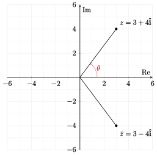

1.1. Complex Numbers#
Definition 1.1 (Imaginary unit \(\i\))
The imaginary unit \(\i\) is defined as that \(\i^2=-1\).
For example, if we have the following equation
the roots will be
Definition 1.2 (Complex number and Complex conjugate)
A complex number is a number in the form of
where \(x\) is the real component of the complex number and \(\i y\) is its imaginary component. We often call \(y\) the imaginary component for simplicity. The modulus of the complex number is calculated as
Its complex conjugate is defined as
For example \(z_1= 2+ 3\i\) and \(z_2=2-3\i\) are two complex numbers, and they are each other’s complex conjugate.
Definition 1.3 (Complex Arithmetic)
The arithmetic operations on two complex numbers given as \(z_1=x_1+\i y_1\) and \(z_2=x_2+\i y_2\) are defined as
Example 1.1
Applying four arithmetic operations on \(1+2i\) and \(2-5i\), calculate
\((1+2\i) + (2-5\i)\)
\((1+2\i) - (2-5\i)\)
\((1+2\i) \times (2-5\i)\)
\(\dfrac{1+2\i}{2-5\i}\)
Solution
Definition 1.4 (Complex number set)
We denote the set of all the complex numbers as
For the real number set \(\mathbb{R}\), we can use the number line to represent it. For the complex number set \(\mathbb{C}\), we can use the complex plane to represent it.

Fig. 1.1 The complex plane \(\mathbb{C}\).
For \(z=x+\i y\), we can also write it in the second form (polar form) as
or the third form (exponential form)
where \(r=|z|\), and \(\theta\) is the angle defined by the real axis and the straight line connecting the origin and \(z\) in the complex plane.
Remark 1.1 (Three forms of a complex number)
Standard form: \(z=x+\i y\)
Polar form: \(z=r(\cos\theta+\i\sin\theta)\)
Exponential form: \(z=r e^{\i \theta}\)
where \(r=|z|=\sqrt{x^2+y^2}\), \(\tan \theta = \dfrac{y}{x}\).
If we use the exponential form to represent complex numbers, then the multiplication and division of two complex numbers can be expressed in simpler ways. Let \(z_1= r_1 e^{\i \theta_1}\) and \(z_2 = r_2 e^{\i \theta_2}\), then